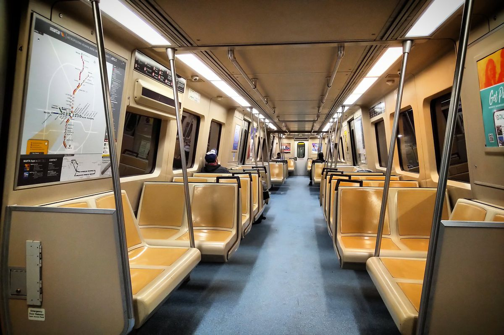

Projects

Riding the Color Line: MARTA Distribution & Racial Segregation in Metro Atlanta
R | sf | spatstat | spdep | Quarto | Spatial Analysis | Monte Carlo Simulation
A spatial analysis exploring whether MARTA rail station placement in Metro Atlanta correlates with racial demographics beyond what population density or employment patterns would predict. Uses point pattern analysis, Moran's I spatial autocorrelation, and Monte Carlo simulations to quantify how historical exclusionary decision-making shaped persistent transit infrastructure inequalities.

Hollywood's $100 Million Gamble: Can AI Predict Box Office Hits?
Python | Pandas | Scikit-learn | Matplotlib | Seaborn | Random Forest | Gradient Boosting | K-Means Clustering | PCA | API Integration | Quarto
A predictive analysis of 2,691 films from The Movie Database, exploring whether pre-release information alone can forecast box office profitability. Combines features like budget, cast popularity, genre, and release timing to achieve 77.7% accuracy and identifies four distinct types of successful movies with different risk-return profiles.
Socioeconomic and Structural Determinants of Voter Turnout in U.S. Elections
R | Quarto | tidyverse | ggplot2 | Plotly | ARIMA Modeling | Time Series Analysis | Hypothesis Testing
An analysis of whether economic and social conditions like unemployment, housing costs, crime, and income are stronger predictors of voting participation than civic engagement alone. Examines turnout patterns across six politically diverse U.S. states spanning 23 election cycles from 1980 to 2024.
The Vanishing Entry Point
JavaScript | D3.js | Chart.js | HTML/CSS | Data Storytelling | Data Visualization
An interactive data story on why the entry-level job market got harder for new graduates. Draws on BLS, New York Fed, NCES, Google Trends, and Georgetown CEW data to show job openings outpacing actual hires, with about 42% of recent grads underemployed, and argues the shift is structural rather than individual.
Consenting to the Algorithm: How Social Media Privacy Policies Obscure Algorithmic Data Use
Python | NLP | textstat | TF-IDF | NMF Topic Modeling | Data Ethics | Tech Policy
An NLP analysis of the privacy policies of Meta, TikTok, YouTube, X, and Snapchat, testing whether users can understand what they agree to and whether platforms disclose how behavioral data feeds their algorithms. Combines readability scoring, topic modeling, and keyword-based clause analysis to argue that meaningful consent is a legal fiction, and proposes mandatory algorithmic impact disclosure modeled on the EU Digital Services Act.
US Home Loan Approval Prediction with Fairness Analysis
Python | scikit-learn | Random Forest | SVM | Neural Networks | Logistic Regression | Algorithmic Fairness
A machine learning study, built with Nkemdibe Okweye, Ella Kulicki, and Kye Toussaint, of 200,000 Virginia home purchase applications from 2018 to 2022 in federal HMDA data. The best of four classifiers, a tuned Random Forest, reached an AUC of 0.832 and 88.1% accuracy, but it wrongly predicted denial for 20.2% of approved Black applicants versus 6.3% of approved White applicants, showing how strong overall accuracy can hide unequal errors.